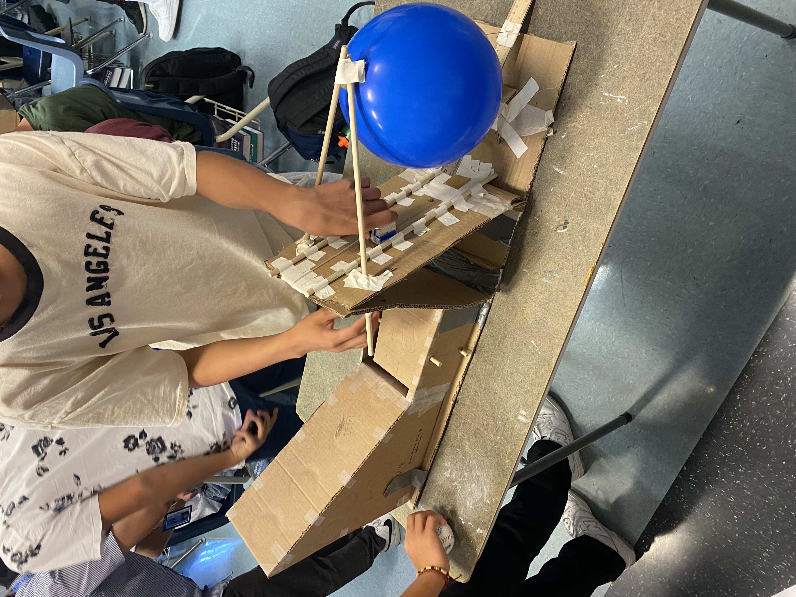
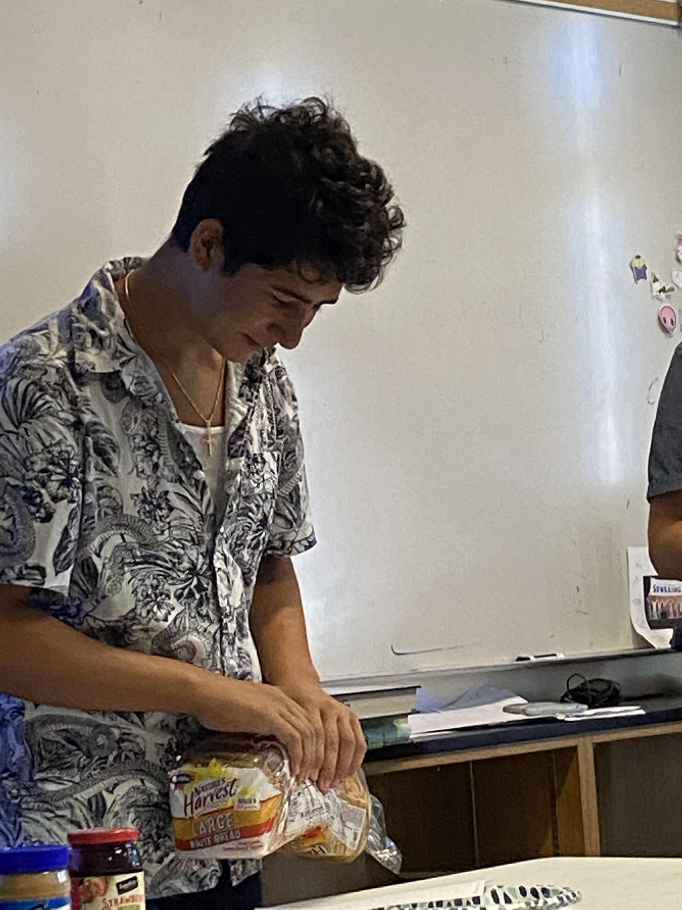
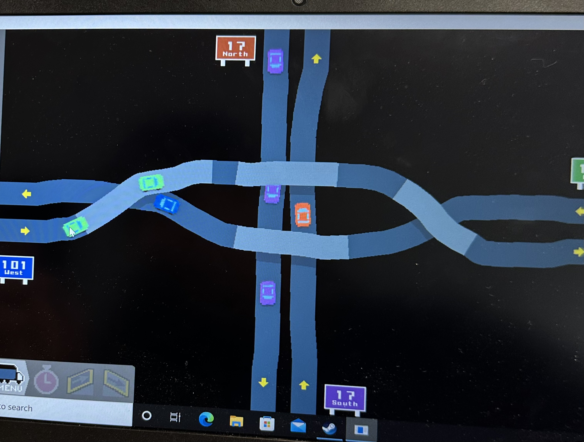
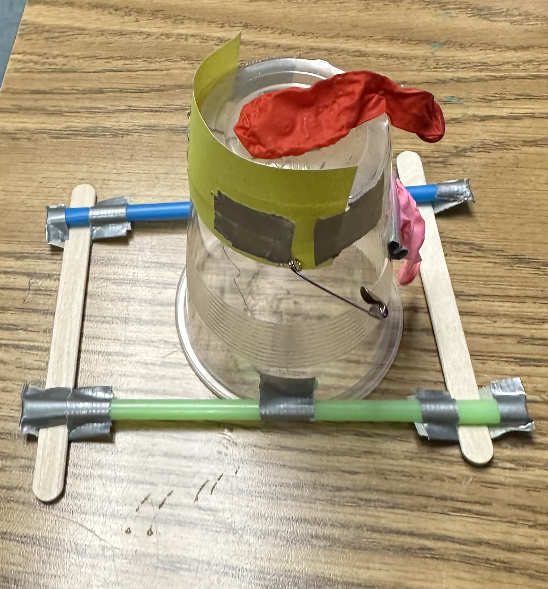
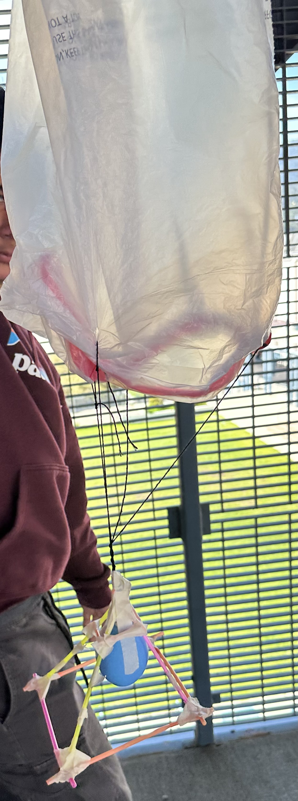
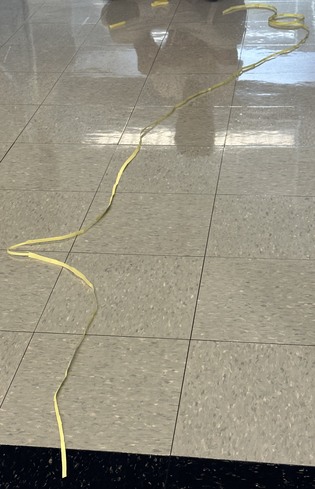
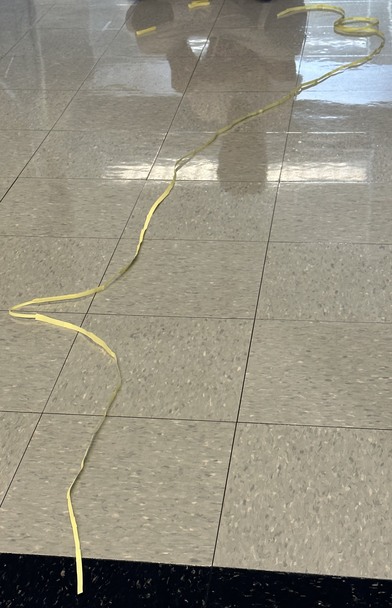

9/2/22 - This week we started to use tinker cad. We started to explore how to use it with our free time. On friday we had a challenge to build and design a household object, I chose a frige.
9/9/22 - This week we started planning out the design for our rube goldberg machines, when all of our table partners had their design we voted on who had the best. Alex Lee had the best design so we chose his rough draft to start improving on his design.
9/16/22 - This week we worked and made alot of progression on our rube goldberg machine. On friday we had a fun time building a paper boat wiht notheng else than a single sheet of paper. hen we added weight, our group added 90 grams of weight. In the end it was a lot of weight but it stayed afloat for 5 minutes. We won this battle with another boat but the two others sank. This was a fun week of engineering.
9/23/22 - This week we finished and tested our groups rube godlberg machines. Or Rube Goldberg machine had a slope, a trap door, a pulley, and a see saw with a needle at the end that pops the baloon. Our group one of the most complex machines out of our class. Over all this week was one of the best ones yet becasue we got to improve our machines then test them.
9/30/22 - This week we disected old laptops with our group so that we learned the internals of the laptop. When we were done we filled out a worksheet to prove we knew all that parts.
10/7/22 - This week we did a cad challenge for a prosthetic limb for an animal of our choise. I chose a dolphin and the limb I decided to make a prosthetic for was its main back flipper/tail. I made a multi joint fin covered in a strong carbon fiber body. If my design ame to life the lach on part and fin would only be visible. On friday we did a challenge where we make a phsical code of how to make a pbj sandwich, some less specific codes failed, more specific codes succeded. This challenge was fun.
10/14/22 - Yesterday we did a challenge where we built a structure out of paper that would later be tested, we tested the paper flying machines by throwing them off a balcony to a bucket about 30 ft away. The goal was to get your flyin machine to land close to the bucet or hit the bucket. I used a paper airplane at first, that failed so I saw other kids using crumpled up balls, I decided that was going to be my next approach. I made the ball as aerodynamc as possible and tried again, if it were not for my aim and thrust power I would have made it in. Then in the same day we cadded our rocket, nothing too special, (transparent body, tip,). We are gong to add the internals later, we just wanted to get an idea of what shape and size we want the rocket to be.
10/21/22 - This week we finished our rocket, we went outside by the feild by our class. Our team's rocket went up then straight into the ground. It was pretty fun overall becasue we got to see how different rocket designes functioned. I think if our group made our rocket more for gliding, we would have done better.

10/27/22 - This week we learned about environmental engineering, on thursday we did a challenge where we make a water filter out of a 2 liter coke bottle, cotton balls, sand, pebbles and medium sized rocks. we stacked these on each other and put dirty water in the filter, after 3 minutes we had clearer water come out the bottom than the top. This was fun activity becasue we got to see which types of rock patterns filter the best When we went back inside we did a challeng were we had to figure out how many candy corns could fit on a peice of 8x11" paper. Our group siad 168 candy corns coud fit on the paper.

11/4/22 - This week we messed around with bread boards on tinker cad after learning about OHM's law. We learned how to use resistors to limmit the current the current coming fro our desired batteries. I quickly realized that tinker cad circutry can be used to safety and guarentee test real circuts that people are going to work on because it mimicks real life mechanics and laws of electricity in a circut board.
11/10/22 - This week we actuay worked on bread boards and we played around with similar consepts that we expeirmented on tinker cad, nothing very intresting, expect getting to use a real breadboard.
11/18/22 - This week we coded a blinking loop on the Arduino website, then we hooked it up to our physical Arduino. We then plugged in our Arduino with our code in our breadbords and hooked it up to the led. When we strarted the test, we were succesful, the led kept on bliking continuosly. On friday, we did a callenge where we had to find out if there were more wheels than doors on campus. Mr.Kim sent out half the class to count for doors and sent my half of the class to hunt for wheels. In the end of all the counting and debating, wheels won.
12/2/22 - This week we started to cad and glue our spagetti bridges, our group shose to do a long and skinny bridge that could possibly hold the weight of a bucket. We are going to test next week.
12/9/22 - This week we worked on and succesfully built our groups 1st spagetti bridge. We hope it dries well with the glue so that we can test it next week and start our second design.
12/15/22 - This Week we built our second and third bridge. Our second bridge had an x railroad pattern and held 1 1/2 cups. We are designing our third bridge with a grid pattern to see which one is stronger.
12/20/22 - This Week we built our final iteration, It held 3 cups. This was our best one becasue of the middle support we added for the final. we also made out bridge straighter than the third iteration. The problem with out first one was that it was too thin and did not have enough middle supports. The problem with the second iteration was thatwe made the sides on the railroad designs too thick and the glue made it weak. The third was fine we just wanted to improve it. Overall the bridge project was a cool way to see the weak points of a design and fix them. I think our last design was the best out of all of them becasue we held double the weight a last time. I think what helped was the middle support and the x design.

1/18/23 - This week we learned about how to make a lake non toxic, the solution was to put shade balls in the lake. Shade balls are very inexpensive black rubber balls that absorb sunlight so that the sunlight does not go into the body of water. Last week we inveted an inovative solution to trying out clothes. Instead of going to a shop and using a physical fitting room, our app alows you to put in your weight and height and your gender. From there you can select any clothing item you want and you will get to virtually see how the item fits on you without having to do any physical work.
1/20/23 - This week we made oobleck which is a mixture of starch and water. Oobleck can be a liquid or solid depending on how you use it. The ratio is 2 starch to one water. When you apply hard and fast force, Oobleck becasomes a solid. When you hold Oobleck, it oozes out of your hand becasue when there is not strong forces it turnes into a liquidy gooey substance. I enjoyed this project becasue its fun to play with while you learn soemthing new. One downside of the Oobleck is that it can become very messy.

1/27/23 - This week we chose to make an invention out of three choises. The choises were an arduino car, a mouse trap car, and a website. Alex and I chose the mouse trap car becasue we both like mechanical engineering. Then Alex and I wrote a 5 page explination of how and why we decided to build the mouse trap car. After that, we made a cad that is shown below.

2/3/23 - This week we finished our cad, then on Friday we played a game called Freeway on steam for four dollars. Its a game where you try to make the most efficient freeway layout so that cars can flow through traffic. This is Alec and I in the process of creatin one of our most efficient freeways yet. image down below.
2/10/23 - This week we started buliding the body of our mouse trap car and reinforcing it with hot glue. Then, on Friday we did a challenge where we had to build the best carrier for a water balloon with a given amount of popsicle sticks and rubber bands.

2/17/23 - This week we worked on our first iteration and finishe it. It ran great but would veer to the left and that was a big problem.
2/24/22 - This my partner and I got to work on making our second iteration body. We were making a second iteration becasue we wanted the new car to run smoother and straighter. We only got the basic materials for the new body and built it. next week we are going to attach the mouse trap, wheels and string and see how it runs.
3/3/23 - This week we finished and tested our second iteration. We wer actually supposed to test our first iteration, but instead we took aal the time we could get to build the second iteration in advance. My partner and I were s happy that our new and improved car runs straighter and farther than our last. We also raced against our classmates from our class along with others. Our group places 2nd in the races. It was also really cool to see the structural ifference between the Arduino cars and the mouse trap cars because one is mechanical and the other is technologic. Here is our second iteration.

3/10/23 - This week we did a challenge where we had to make a functional boat that could float. Our group built a boat that looked good but we relized it was to tall and had a bad sail desing so it didn't go that far. It was a fun challenge and of course, it was intresting to see the variety of different boats and how they preformed.Then on Friday we had a guest speaker that talked about his career of petroleum engineering. It was pretty col to see him exlain the job, but im nt to intrested in that feild and it looked really confusing.
3/24/23 - This week we started a project were we drop an egg and try not to crack it. So far all groups including mine have made a cad for our design. This is our cad, its not the best but it is what we have for now.

3/31/23 - This week we focused on building a exoskeleton for an egg that we would drop 3 stories. Our design was good becasuse it was very simple and easy but good becasue the egg survived. We put an egg in a baloon, then put newspaper in the baloon to create a cushion. Then we built a triangular cage out of straws, we then put the egg inside and attached the trash bag. Our design can be seen below.
4/7/23 - This week we were introduced to our final project, building a lifesized cardboard an tape boat. Two people from our group must take this boat across the school pool. We made a paper scketch and a cad that can be seen below. We decided we wanted a big base so that the boat can distribute the weight of people evenly. Then on friday we did a challenge when we had to make the longest functional bridge out of sticky notes. our design in the middle of its making can be seen below aswell.
 

4/14/23 - This week we drew cutouts for our caded boats and cut the bottoms out. That was pretty much all we did becasue it was a long process.
4/21/23 - This week my partner Alex and I built a prototype boat out of cardboard and ducktape. We just changed the feet to inches and made a mini model. On thursday, we tested the mini prototype in the school pool with weights. Then on Friday, we just had a free day. the prototype and test can be seen below.

4/28/23 - This week we worked on getting the base shape of our boat, next week we will reinforce it becasue we will gt our official tape roles.
5/5/23 - This week we finished our boat and added reinforcements to the bottom. That is pretty much all.